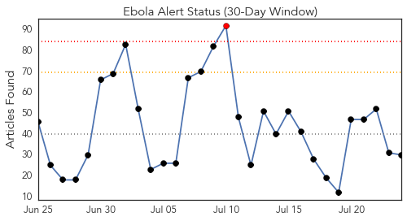
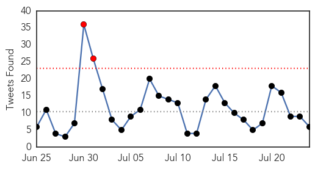
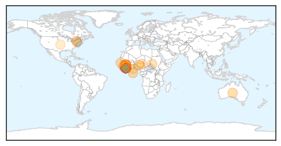
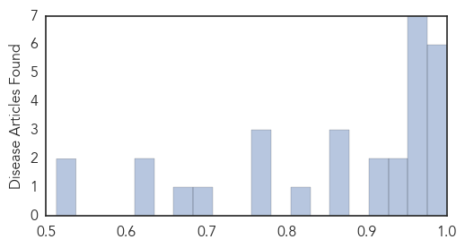
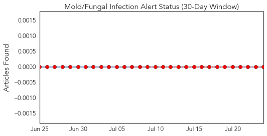
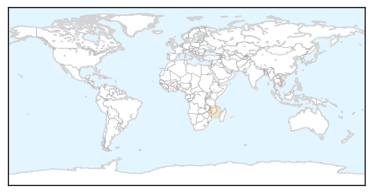
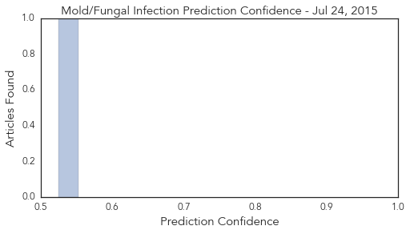

Ebola
30-Day Web Trend
1 alerts, 0 warnings

30-Day Twitter Trend
2 alerts, 0 warnings

Article Locations
Article Confidences
Top Articles:
- 1.000
- Ebola: Not yet over
- 0.999
- Australian nurse tests negative for Ebola
- 0.990
- West Africa Situation Worse Than Worst News Report, But Let's Not Fear but Help Africa
- 0.985
- Suspected Ebola patient dies after being denied treatment
- 0.984
- Gambia Gives Sierra Leone Half A Million Dollar To Fight Ebola
- 0.983
- Why I went to fight Ebola… three times
- 0.974
- No trace of new Ebola transmission
- 0.968
- Measures Taken To Tackle Polio Helped Prevent Nigeria From Ebola Epidemic
- 0.968
- Ebola burial teams seek bribes in Sierra Leone, health official says « Awoko Newspaper
- 0.964
- UN agency assures Sierra Leone of support in fight against Ebola
- 0.959
- Encouraging efforts in restoring our ruined health sector
- 0.955
- New Ebola death rate hits two in Liberia
- 0.952
- IPC Tops 3-Day Agenda
- 0.939
- American- Based Company Develops a New Device To Fight Against Ebola Virus
- 0.931
- Another experimental drugs arrive for Ebola
- 0.926
- From New York to the Ebola frontlines
- 0.910
- Distinct lineages of Ebola virus in Guinea during the 2014 West African epidemic
- 0.873
- Nigeria Marks A Year Without Polio Cases
- 0.867
- British Red Cross blog
- 0.867
- Ebola Outbreak Appeal Archives
- 0.813
- LCP, PREVAIL launch awareness on Ebola Vaccine Study
- 0.774
- president koroma off to washington – April 2015
- 0.767
- Welcome to the Expotimes News
- 0.765
- Eid prayers focused on Ebola eradication
- 0.706
- Top 7 Infectious Disease News Stories
- 0.662
- Hacked traffic sign warns drivers, 'Ebola outbreak ahead'
- 0.632
- Ebola Doctor Who Thought He Was on His Death Bed Reveals the Key Moment That Showed Him Something ‘Profound’ About God
- 0.617
- Ebola Survivors battling side effects in Margibi
- 0.515
- Sierra Leone News: UNMEER closure will not affect UN support-NERC CEO « Awoko Newspaper
- 0.513
- President of ebola survivors commend convalescent plasma transfusion « Awoko Newspaper
Top Tweets:
- 0.814
- RT: [PHOTO] Health workers participate in simulation exercise on Ebola infection prevention & control in Sierra Leone. http://t…
- 0.773
- RT: Lets keep Ebola out of Liberia: keep washing hands w/soap/chlorine/water and follow other prevention methods. http://…
- 0.739
- Sierra Leone Athletes Try to Regain Stride After Halting for Ebola - Voice of America http://t.co/8NywUsOOhB ebola EVD
- 0.708
- Hacked traffic sign warns drivers 'Ebola outbreak ahead' - Mashable - Mashable http://t.co/iDEygMdJ4v ebola EVD
- 0.647
- Sierra Leone begins treating Ebola patients (there were 3 new cases diagnosed this week) with survivors' plasma: http://t.co/XgUFq8pohE
- 0.541
- RT: jeudi >>> Mission Humanitaire AfricaStopEbola en Guinée et collecte de Data pour un rapport pour USaid
Mold/Fungal
30-Day Web Trend
2 alerts, 0 warnings

30-Day Twitter Trend
0 alerts, 0 warnings

Article Locations
Article Confidences
Top Articles:
Top Tweets:
-
No tweets found for Jul 24, 2015